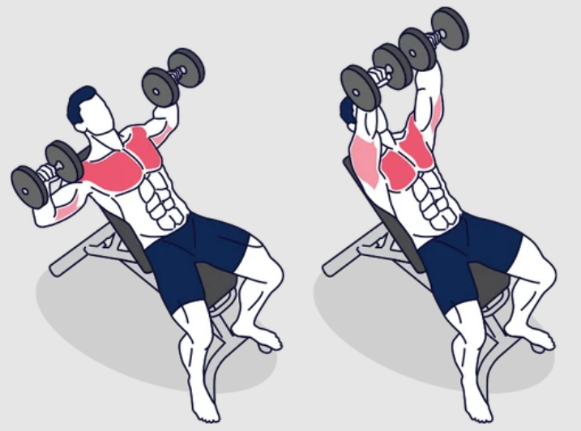
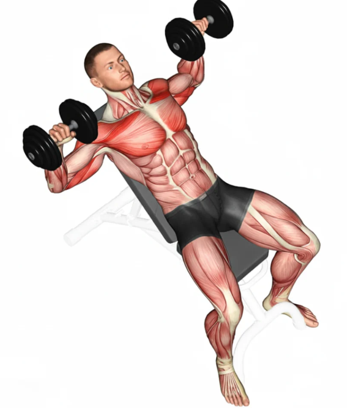
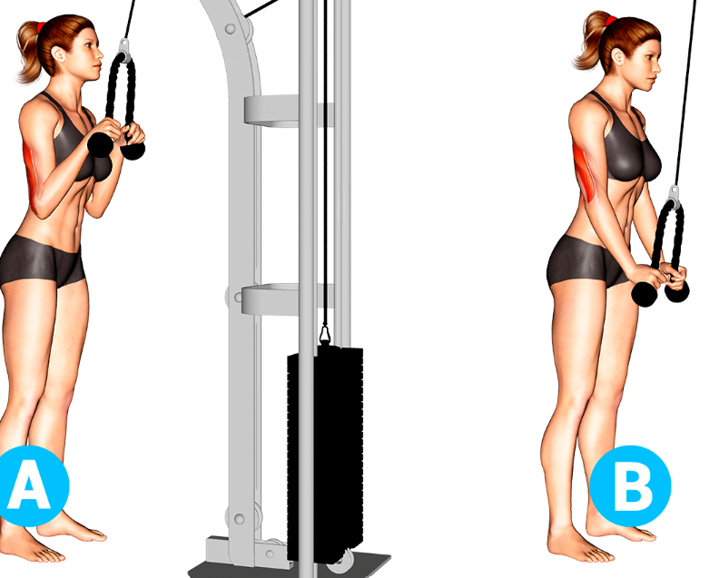
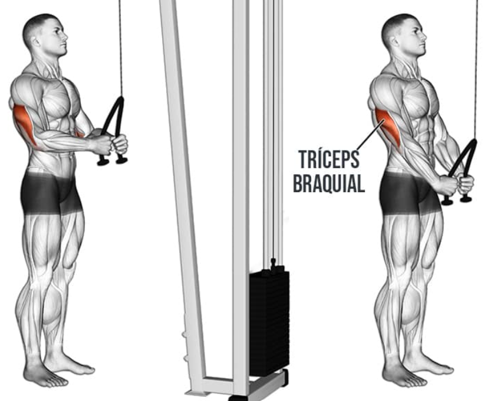
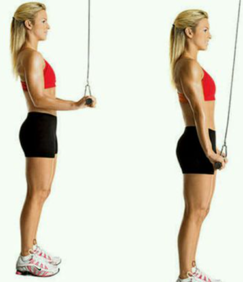
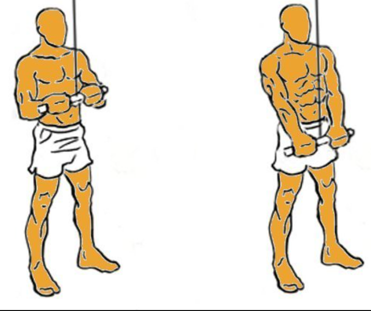

🌱 Calentamiento de hombros, codos y muñecas


Mueve suavemente los hombros, codos y muñecas: haz círculos con los brazos, flexiona y extiende los codos y moviliza las muñecas. Evita rebotes y cualquier movimiento doloroso. El objetivo es preparar las articulaciones y activar la musculatura.
🎥 Rotación de muñeca 🎥 Elevaciones laterales 🎥 Elevaciones frontales 🎥 Curl de bíceps🏋️ Press inclinado con mancuernas


Ajusta el banco a una inclinación cómoda y apoya los pies en el suelo. Lleva las mancuernas a la altura del pecho y empújalas hacia arriba, sin chocarlas ni bloquear los codos con fuerza. Bájalas lentamente hasta cerca del pecho. Mantén los hombros apoyados y evita arquear demasiado la espalda.
🎥 Ver press inclinado💪 Elevaciones laterales y pájaros
Haz primero las elevaciones laterales: sube los brazos hacia los lados hasta aproximadamente la altura de los hombros y bájalos lentamente. Luego inclina el torso hacia delante con la espalda estable y realiza los pájaros, elevando las mancuernas hacia los lados. Usa poco peso al empezar y evita balancearte o encoger los hombros.
🎥 Ver elevaciones laterales 🎥 Ver pájaros💪 Extensión de tríceps con cuerda


Sujeta la cuerda y mantén los codos cerca de los costados. Empuja hacia abajo hasta estirar los brazos, separando ligeramente los extremos al final. Mantén los hombros relajados y evita mover los codos o inclinar el cuerpo. Regresa lentamente y conserva el control del peso.
🎥 Ver extensión con cuerda💪 Extensión de tríceps con barra


Sujeta la barra de la polea y mantén los codos cerca del cuerpo. Empuja hacia abajo hasta extender los brazos, sin encorvarte ni usar el impulso del torso. Vuelve lentamente a la posición inicial. Evita bloquear los codos bruscamente y usa un peso que puedas controlar.
🎥 Ver extensión con barra❤️ Salto de lazo

Salta la cuerda a un ritmo cómodo y constante. Mantén los codos cerca del cuerpo y gira la cuerda principalmente con las muñecas. Haz saltos pequeños y aterriza suavemente. Si estás empezando, practica sin cuerda o alterna saltos suaves con pausas.
🎥 Ver salto de lazo 🎥 Ver otra demostración🏆 ¡Terminaste!
Hoy te diste tiempo para ti y eso ya es un logro. Descansa, hidrátate y siéntete orgullosa de haber avanzado a tu ritmo.